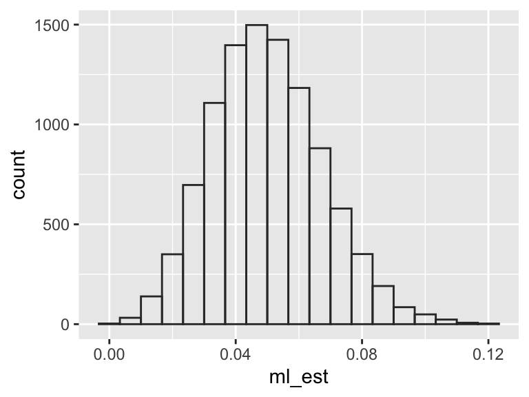
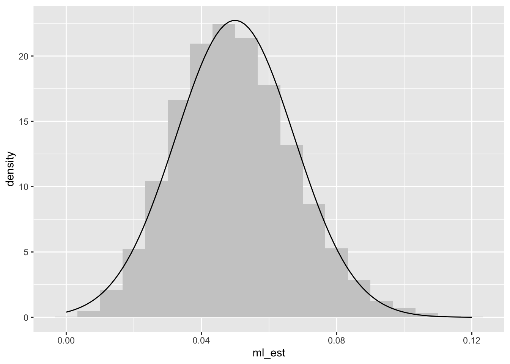

Before we hop into new material, I want to rewind and review some old, but foundational, ideas.
What’s the most important concept in statistical inference? It could be the sampling distribution. For effect, let me back off the hedge.
The most important concept in statistical inference is the sampling distribution.
To define a sampling distribution, you must imagine repeating a study over and over. If each study has a random component, then the estimate across studies will vary randomly. A “random component” might be: random sampling, random assignment to treatment and control, or an imagined stochastic component like “the errors are like draws from a normal distribution.” The distribution of the estimates across the many imagined studies is called the sampling distribution.
To build our intuition, let’s look at an example.
4.1 Example: The Toothpaste Cap Problem
For a sample of 150 tosses, we recognize that the ML estimate \(\hat{\pi} = \text{fraction of tops among the tosses}\) does not (usually) exactly equal the parameter \(\pi\). Instead, the particular \(\hat{\pi}\) that the study produces is a draw from a distribution.
Let’s illustrate that with a simulation. For these simulations, I suppose that we toss the toothpaste cap 150 times and the chance of a top is 5%.
n_sims <-10# number of repeated studiesml_est <-numeric(n_sims) # a container for the estimatesfor (i in1:n_sims) { y <-rbinom(150, size =1, prob =0.05) # chance of a top is 5% ml_est[i] <-mean(y) # observed fraction of tops (i.e., 1s) in y}print(ml_est, digits =2)
As you can see, the ML estimates vary to from sample to sample—different data sets produce different ML estimates.
If we repeat the simulations a large number of times, we can use a histogram to visualize the sampling distribution.
n_sims <-10000ml_est <-numeric(n_sims) # container to store resultsfor (i in1:n_sims) { y <-rbinom(150, size =1, prob =0.05) ml_est[i] <-mean(y)}# create a histogram of the sampling distributiongg_data <-data.frame(ml_est = ml_est)ggplot(gg_data, aes(x = ml_est)) +geom_histogram(# the settings below make the bars appear "smooth" for this problemcenter =8/150, # centered at an observable value.binwidth =1/150, # one bar per observable value# color to distinguish barsfill =NA, color ="grey20")

We can also work with the sampling distribution analytically.
There are three features that we care about.
What is the mean of the sampling distribution?
What is the SD of the sampling distribution?
What is the shape of the sampling distribution?
First, we can find the mean. For the ML estimator in the toothpaste cap problem, this is straightforward.
\[
\small
\begin{align*}
E(\hat{\pi})
&= E\left( \frac{1}{150} \sum_{i=1}^{150} y_i \right)
&& \text{definition of } \hat{\pi} \\
&= \frac{1}{150} \sum_{i=1}^{150} E(y_i)
&& \text{linearity of expectation; } E(cX) = cE(X) \\
&= \frac{1}{150} \cdot 150 \cdot E(y_i)
&& \text{each } y_i \text{ has same expectation because they are iid} \\
&= E(y_i)
&& \text{simplify constants; } \frac{1}{150} \cdot 150 = 1\\
&= 0.05
&& \text{each } y_i \text{ is a Bernoulli random variable with mean } \pi = 0.05
\end{align*}
\]
Second, we can work out the variance and SD. Again, for this problem, this is easy.
We can compare these analytical results to our simulations above.1
1 In this case, the analytical results are exactly correct and the simulations are (arbitrarily precise) approximations. In some cases, analytical results are approximations and simulations are arbitrarily precise approximations, making the simulations more reliable.
# mean of sampling distributionmean(ml_est)
[1] 0.04995667
# sd of sampling distributionsd(ml_est)
[1] 0.0175467
Lastly, we can approximate the shape of the sampling distribution. Since we are summing many (i.e., 150) iid random variables (i.e., Bernoulli trials), the central limit theorem2 suggests that this histogram will be approximately normal.
2 Suppose \(y_1, y_2, \dots, y_N\) are iid random variables with finite mean \(\mu\) and finite variance \(\sigma^2\) Then, as \(N \to \infty\), \(\sqrt{N}\cdot \left[ \frac{ \operatorname{avg}(y_n) - \mu}{\sigma} \right]\) converges in distribution to the standard normal distribution, where . Said less formally, the distribution of the sample average approaches a normal distribution as the sample size grows large, regardless of the distribution of \(y_i\) (but finite mean and variance are required).
The figure below shows the sampling distribution.
ggplot(gg_data, aes(x = ml_est)) +geom_histogram(aes(y =after_stat(density)), # use density scale for y-axiscenter =8/150, binwidth =1/150, fill ="grey80") +# add normal curve to histogramstat_function(fun = dnorm, args =list(mean =mean(gg_data$ml_est), sd =sd(gg_data$ml_est)))

4.2 Example: Normal Model
As a second example, let’s review the familiar normal model.
Suppose we collect a sample of size \(N\) from a normal distribution with unknown mean \(\mu\) and unknown variance \(\sigma^2\). We estimate the mean using the sample average so that \(\hat{\mu} = \operatorname{avg}(y) = \frac{1}{n} \sum_{i=1}^N y_i\).3
3 This is the ML estimator as well! But it’s also motivated in other (sometimes even better!) ways.
As is well-known, the expected value of \(\hat{\mu}\) is \(\mu\).
\[
\small
\begin{align*}
E \left[ \operatorname{avg}(y) \right]
&= E\left( \frac{1}{N} \sum_{i=1}^N y_i \right)
&& \text{definition of } \operatorname{avg}(y) \\
&= \frac{1}{N} \sum_{i=1}^N E(y_i)
&& \text{linearity of expectation} \\
&= \frac{1}{N} \cdot N \cdot E(y_i)
&& y_i \text{ are iid} \\
&= E(y_i) = \mu
&& \text{simplify constants}
\end{align*}
\]
And the variance has a familiar form.
\[
\begin{align*}
\text{Var}[\operatorname{avg}(y)]
&= \text{Var}\left( \frac{1}{N} \sum_{i=1}^N y_i \right)
&& \text{definition of } \operatorname{avg}(y) \\
&= \frac{1}{N^2} \sum_{i=1}^N \text{Var}(y_i)
&& \text{variance of independent sum} \\
&= \frac{1}{N^2} \cdot N \cdot \sigma^2
&& y_i \text{ are normal with variance } \sigma^2 \text{ and are iid} \\
&= \frac{\sigma^2}{N}
&& \text{simplify constants}
\end{align*}
\]
The SD, then, is a familiar quantity \(\frac{\sigma}{\sqrt{N}}\).
Lastly, the standardized sample mean follows a \(t\) distribution, so that \(\sqrt{N} \cdot \left[ \frac{\operatorname{avg}(y) - \mu}{\operatorname{SD}(y)} \right]\) follows a t distribution in \(N - 1\) degrees of freedom. This sampling distribution is the foundation for the one-sample \(t\)-test.
4.3 Bias
But how do we use the sampling distribution? In two ways.
To evaluate estimators. We think that the sampling distributions of some estimators are preferable to the sampling distributions of other estimators.
To create hypothesis tests and confidence intervals. We recognize that estimates are in fact just estimates, so our claims should reflect the uncertainty in those estimates.
One way to evaluate estimators is to assess their bias.
Definition 4.1 (Bias)
\(\hat{\theta}\) is biased if \(E(\hat{\theta}) \neq \theta\).
\(\hat{\theta}\) is unbiased if \(E(\hat{\theta}) = \theta\).
The bias of \(\hat{\theta}\) is \(E(\hat{\theta}) - \theta\).
We tend to prefer unbiased to biased estimators and estimators with less bias to estimators with more bias.
Importantly, ML estimators are not necessarily unbiased. Of the models we see in this course, most are biased.
4.3.1 Example: Bernoulli Distribution
Above, we saw that that for the toothpaste cap problem with 150 tosses and a 5% chance of a top, the fraction of tosses in the sample has an expected value of 5%. This means that the ML estimator is unbiased in that situation.
This is true more generally as well. You could show that a similar result holds for any number of tosses and any chance of a top.
We can use a Monte Carlo simulation to check this analytical result.
set.seed(1234)n_mc_sims <-100000pi_hat <-numeric(n_mc_sims)for (i in1:n_mc_sims) { y <-rbinom(150, size =1, prob =0.05) pi_hat[i] <-mean(y)}# expected value of pi-hatmean(pi_hat)
[1] 0.05006227
# estimated monte carlo errorsd(pi_hat)/sqrt(n_mc_sims)
[1] 5.631271e-05
But notice that the property of unbiasedness does not follow the estimate through transformation (Rainey 2017). Because the sample is relatively large in this case (150 tosses), the bias is small, but detectable with 100,000 Monte Carlo simulations.
Rainey, Carlisle. 2017. “Transformation-Induced Bias: Unbiased Coefficients Do Not Imply Unbiased Quantities of Interest.”Political Analysis 25 (3): 402–9. https://doi.org/10.1017/pan.2017.11.
odds_hat <- pi_hat/(1- pi_hat)# actual odds0.05/(1-0.05)
[1] 0.05263158
# expected value of odds-hatmean(odds_hat)
[1] 0.05307323
# estimated monte carlo errorsd(odds_hat)/sqrt(n_mc_sims)
[1] 6.288517e-05
# the z-statistic testing that mean of simulated odds = actual odds(mean(odds_hat) -0.05/0.95)/(sd(odds_hat)/sqrt(n_mc_sims))
[1] 7.023072
4.3.2 Example: Exponential Distribution
Suppose we sample from an exponential distribution with unknown rate \(\lambda\). The ML estimator of the rate \(\lambda\) is \(\hat{\lambda}^{ML} = \frac{1}{\text{avg}(x)}\).
To compute bias, we compute the expectation \(E \left( \hat{\lambda}^{ML} \right) = E\left( \frac{1}{\text{avg}(x)} \right)\).
There’s a trick. Notice that \(\frac{1}{x}\) is convex for \(x > 0\).4 Jensen’s Inequality states that if \(g()\) is a convex function and \(X\) is a random variable, then \(g(E(X)) \leq E(g(X))\); moving an expectation inside a convex function decreases the value. Applying Jensen’s inequality, we know that \(E\left( \frac{1}{\text{avg}(x)} \right) > \frac{1}{E(\text{avg}(x))}\).
4 A function is convex if the function never curves above the line between any two of its points.
But \(\text{avg}(x)\) is the sample mean of iid exponential random variables, so \(E[\text{avg}(x)] = \frac{1}{\lambda}\). It must be, then, that \(E \left( \hat{\lambda}^{ML} \right) = E\left( \frac{1}{\text{avg}(x)} \right) > \lambda\). Thus, \(\hat{\lambda}^{ML}\) overestimates the true rate on average and is a biased estimator.
We can confirm this result with a Monte Carlo simulation.
lambda <-2.0# the true ratesample_size <-5# small sample size for large biasn_mc_sims <-100000# number of monte carlo simulations# do monte carlo simulationslambda_hat <-numeric(n_mc_sims) # containerfor (i in1:n_mc_sims) { x <-rexp(sample_size, rate = lambda) lambda_hat[i] <-1/mean(x) # ml estimate}# expected value of lambda-hatmean(lambda_hat)
[1] 2.500481
# estimated monte carlo errorsd(lambda_hat) /sqrt(n_mc_sims)
[1] 0.004612098
The average of the simulated values of \(\hat{\lambda}^{ML} \approx 2.5\) is larger than the true value \(\lambda = 2.0\), just as the result above shows.
4.4 Standard Error
Second, we can use the sampling distribution (or estimates of features of the sampling distribution) to create hypothesis tests or confidence intervals.
For many problems, we know that we can create a 90% confidence interval for \(\theta\) using \([\hat{\theta} - 1.64 \cdot \hat{\text{SE}}(\hat{\theta}), \hat{\theta} + 1.64 \cdot \hat{\text{SE}}(\hat{\theta})]\), where \(\hat{\text{SE}}(\hat{\theta})\) is the estimate of the standard error of the sampling distribution.
Similarly, we can compute the p-value for the test of the one-sided hypothesis that \(\theta > 0\) using \(1 - \Phi\left( \frac{\hat{\theta}}{\hat{\text{SE}}(\hat{\theta})} \right)\), where \(\Phi(\cdot)\) is the standard normal CDF.
Definition 4.2 (Standard Error (SE)) The standard error is the standard deviation of the sampling distribution.
In practice, we’ll need to estimate the SE using a single, observed data set. But before we worry about estimating the SE, let’s focus on understanding the actual SE using a few examples. For a hypothetical model, we can work out the actual SE directly or use a simulation.
4.4.1 Example: Bernoulli Model
Suppose \(n\) samples \(y_1, \dots, y_n\) from a Bernoulli distribution with parameter \(\pi\). Let \(\hat{\pi} = \text{avg}(y)\). We can compute the SE of \(\hat{\pi}\) analytically, but we work with the variance first, since that’s easier.
The standard error is the square root of the variance, so that \(\text{SE}(\hat{\pi}) = \sqrt{ \frac{\pi(1 - \pi)}{n} }\).5
5 To obtain a commonly-used formula and preview a later result, we can plug in the estimator \(\hat{\pi}\) into \(\text{SE}(\hat{\pi}) = \sqrt{ \frac{\pi(1 - \pi)}{n} }\) to obtain an estimate of the SE, so that \(\hat{\text{SE}}(\hat{\pi}) = \sqrt{ \frac{\hat{\pi}(1 - \hat{\pi})}{n} }\).
4.4.2 Example: Exponential Model
Suppose we have \(n\) samples \(y_1, \dots, y_n\) from an exponential distribution and estimate the rate \(\lambda\) with \(\hat{\lambda}^{ML} = \frac{1}{\text{avg}(y)}\). It isn’t easy to work out the variance analytically, but a simulation works just fine for particular values of \(n\) and \(\lambda\).
lambda <-2.0n <-30n_mc_sims <-10000lambda_hat <-numeric(n_mc_sims)for (i in1:n_mc_sims) { x <-rexp(n, rate = lambda) lambda_hat[i] <-1/mean(x)}# simulated SEsd(lambda_hat)